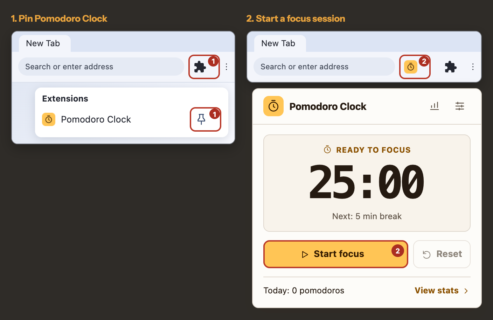

Pomodoro Clock
Pomodoro ClockInstalled
Pomodoro Clock is ready
Start your first focus session from the Chrome toolbar.
Click the puzzle icon in Chrome, then click the pin next to Pomodoro Clock.
Click the pinned Pomodoro Clock icon, then click Start focus in the popup.
